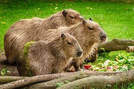

Descripción
El capibara, chigüire o carpincho es una especie de roedor de la familia de los cávidos, nativa de Sudamérica. Es el roedor viviente de mayor tamaño y peso del mundo. El otro miembro existente de ese género es el capibara menor. Sus parientes cercanos incluyen a los conejillos de indias y los mocós, y está relacionado más lejanamente con el agutí, la chinchilla y el coipo. Habita humedales y bosques densos y vive cerca de cuerpos de agua. Es una especie muy social y se puede encontrar en grupos de hasta cien individuos, pero por lo general vive en grupos de diez a veinte individuos.
